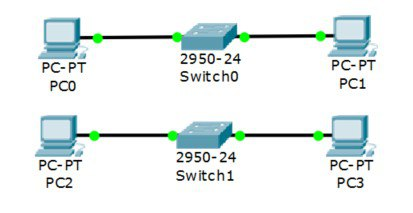
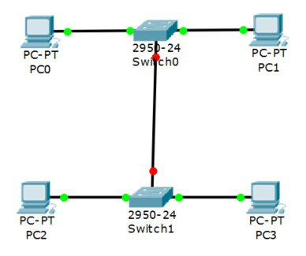

Лабораторная работа №3.
Расчет диапазонов подсетей.
| A | B | C | |
|---|---|---|---|
| Кол-во узлов | 9 | 1765 | 190 |
| subnet | 192.168.1.0 | 172.16.1.0 | 10.10.1.0 |
| mask | 255.255.255.240 | 255.255.248.0 | 255.255.255.0 |
| broadcast | 192.168.1.15 | 172.16.8.255 | 10.10.1.255 |
ШАГ 1: Разместить на рабочем поле коммутатор и два компьютера и соединить их

ШАГ 2: Добавить на рабочее поле еще один коммутатор с двумя компьютерами и настроить адресацию из другой подсети

ШАГ 3: Соединить коммутаторы между собой и проверить работоспособность сети (Не работает, так как коммутаторы подсоединяются только к маршрутизаторам)

ШАГ 4: Добавить маршрутизатор на рабочее поле

ШАГ 5: Добавить на рабочее поле еще один маршрутизатор. Подключить к нему коммутатор и компьютер

| Устройство | IP - адрес | Маска | Шлюз |
|---|---|---|---|
| PC0 | 192.168.1.14 | 255.255.255.240 | 192.168.1.1 |
| PC1 | 192.168.1.13 | 255.255.255.240 | 192.168.1.1 |
| PC2 | 172.16.8.254 | 255.255.248.0 | 172.16.1.1 |
| PC3 | 172.16.8.253 | 255.255.248.0 | 172.16.1.1 |
| PC4 | 10.10.1.254 | 255.255.255.0 | 10.10.1.1 |
| R0 0/0 | 192.168.1.1 | 255.255.255.240 | |
| R0 0/1 | 172.16.1.1 | 255.255.248.0 | |
| R0 0/2 | 15.15.1.2 | 255.255.255.252 | |
| R1 0/1 | 10.10.1.1 | 255.255.255.0 | |
| R1 0/2 | 15.15.1.1 | 255.255.255.252 |
Настройка статической маршрутизации производится при помощи команды: ip route [сеть назначения] [маска] [маршрут]
Установить банер на сетевое оборудование: banner motd [баннер]
Проверка работоспособности сети:

Пакеты успешно отправляются!